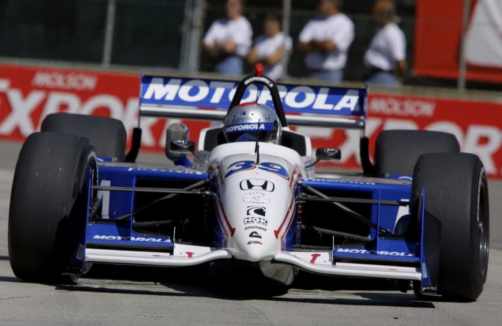
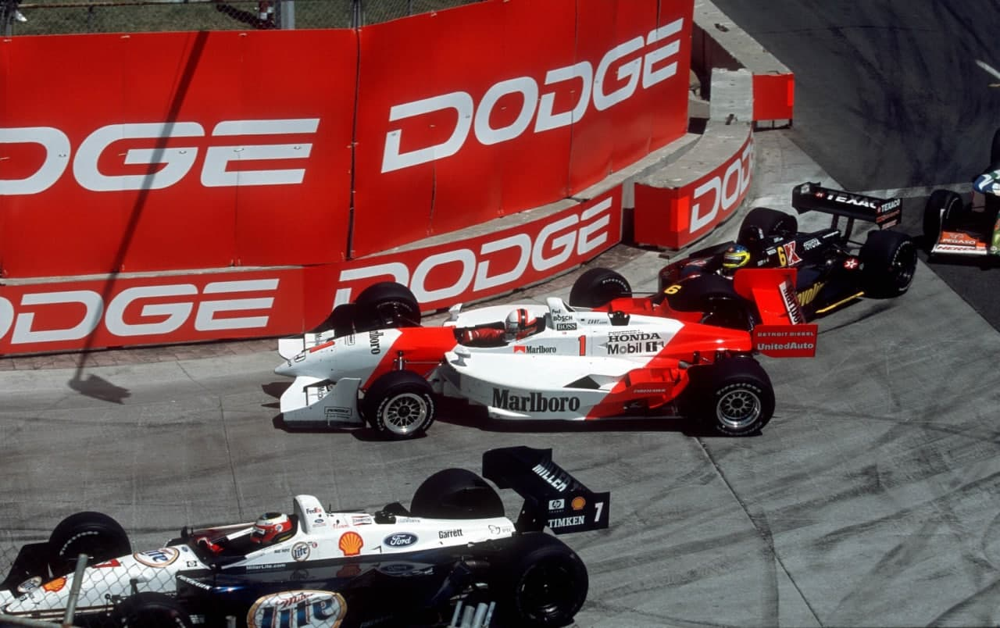
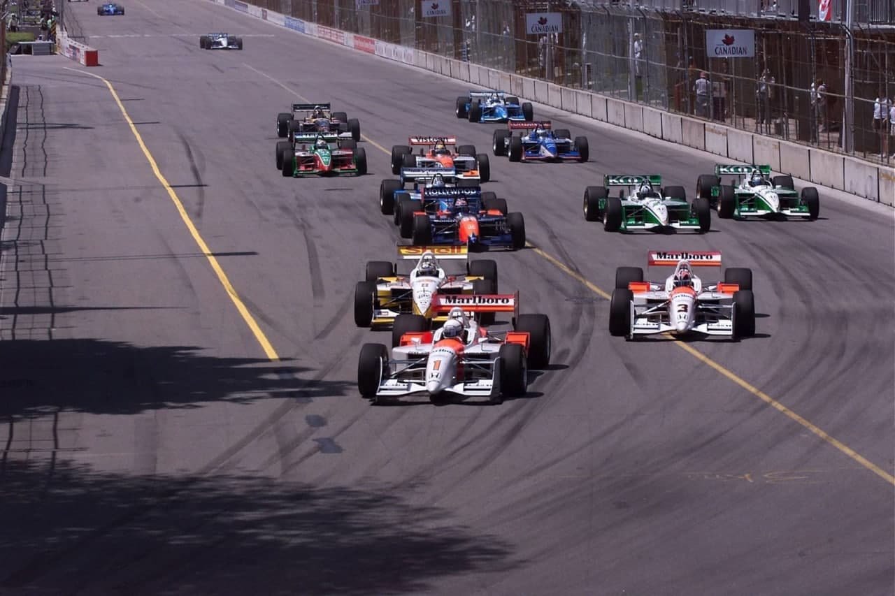
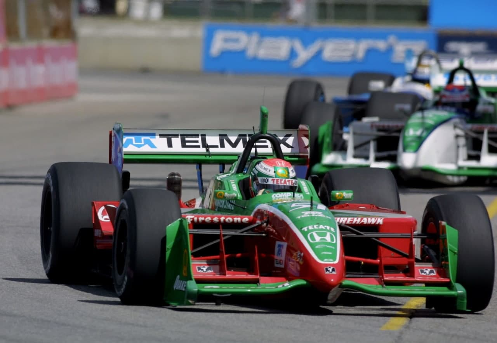
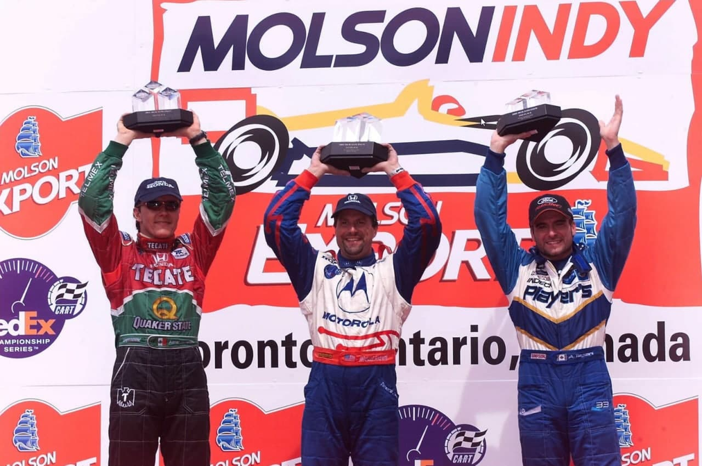

MÁGICA DE RECORDISTA

Andretti chega à 41ª vitória da carreira, a sétima nas ruas de Toronto, depois de recuperar 25 posições.
No pódio, após receber seu sétimo troféu de vencedor do GP de Toronto. Michael Andretti confessou: “Em nenhum momento pensei que pudesse estar aqui.” O americano repetiu a mágica de Dario Franchitti duas semanas antes, em Cleveland: saiu do último lugar para a vitória. E a façanha foi ainda mais impressionante, porque foi conseguida num apertado circuito de rua. Coisas da Cart. Andretti foi o sétimo vencedor diferente em nove etapas, prova da incrível competitividade da categoria. O show de Michael começou na largada. Ele enroscou-se com Scott Dixon, quase bateu no muro e teve o motor apagado. Por sorte, os fiscais de pista agiram rápido e empurraram o carro, sem que ele perdesse uma volta. A partir daí. Andretti só precisou usar a sua conhecida disposição de andar no limite. “Foi uma corrida de verdade, do jeito que eu gosto: meti o pé no acelerador e nem me preocupei em economizar combustível", contou. A escalada de Andretti foi impressionante. De 26°, ele passou para 22° em quatro voltas. Na 10ª, já era 16°. Na 40ª, estava entre os 12 que marcam pontos. E, na 50ª, subiu para oitavo. Demorou mais quatro voltas e ele assumiu o quarto lugar. Mas, até então, a corrida parecia ter dono: a Penske. Gil de Ferran e Hélio Castroneves largaram na frente e deram a impressão de ter o controle da corrida. Reger Penske, porém, se equivocou na estratégia de Gii e chamou-o para um segundo pit-stop na volta 50, aproveitando uma amarela. Era cedo demais e o cálculo de que ele podería completar a prova sem uma nova parada foi errado. Gii voltou aos boxcs na volta 68 e perdeu suas chances. O campeão acabou se envolvendo num acidente com Cristiano da Matta e abandonou a corrida. “A equipe me deu um grande carro, mas, infelizmente, as bandeiras amarelas não jogaram a nosso favor”, lamentou. Da Matta ficou na bronca: “Gil tocou rodas com Max Papis na minha frente, tentei evitar os dois, mas Gil voltou na minha direção.” O piloto mineiro já havia se envolvido num acidente no começo com Jimmy Vasser e também deixou a prova.

Helinho usou a estratégia correta e assumiu a liderança. Parecia rumar tranquilo para a vitória após o segundo pit-stop, quando foi surpreendido pela quebra do motor Honda. Para sua sorte, o líder do campeonato, Kenny Brack que vinha em terceiro, também abandonou, com um problema elétrico. Adrian Fernandez herdou a ponta, mas seu motor apagou na saída do pit-stop. Tony Kanaan ganhou o primeiro lugar e imaginou que seu grande dia na Mo Nunn havia chegado. “Quando vi a placa P1, pensei: “É hoje!!!”. Mas a equipe não conseguiu repor todo o combustível no tanque, por um problema no sistema de reabastecimento. Tony teve de voltar aos boxes e caiu para o 11º lugar. “Quando me chamaram para reabastecer de novo, meu coração parou de bater”, contou, desolado. Ele ainda reagiu, ganhou três posições, mas sofreu pane seca na última volta, terminando em 10°, “Foi uma das maiores decepções que tive nos últimos anos.”

Andretti assumiu a ponta, deixando os boxes no seu último pit-stop no exato momento em que Alex Tagliani passava na reta. O canadense havia parado mais cedo, junto com Gil de Ferran e precisava economizar combustível.” A partir daí não tive mais problemas”, contou Andretti, que ampliou seu recorde na Cart para 41 vitórias. Pelo oitavo ano seguido ele conquistou uma vitória, marca só inferior a de Emmerson Fittipaldi, que passou 11 temporadas consecutivas vencendo pelo menos uma corrida, de 1985 a 1995. O americano assumiu a vice liderança do campeonato.

Tagliani chegou em segundo e Fernandez completou o pódio, o primeiro como dono de equipe. Mas o mexicano não ficou satisfeito. "Não fosse o problema da embreagem no boxe e essa corrida era minha”, lamentou. Alessandro Zanardi mostrou a velha forma e chegou em quarto, Scott Dixon e Paul Tracy completaram os seis primeiros e Maurício Gugelmin terminou em sétimo. Roberto Moreno foi 11º, após escapar de dois acidentes, perder uma volta e cair para 25º. “Vou guardar estes pontinhos na memória”, festejou. Christian Fittipaidl e Bruno Junqueira bateram novamente quando disputavam o quinto lugar. Christian tentou a ultrapassagem por fora, Bruno retardou a freada e os dois foram parar nos pneus. Fittipaldi, ironicamente, bateu palmas de dentro do cockpit para a manobra do rival. “Eu já vinha tentando passá-lo e ele fechou a porta várias vezes. Quando fui por fora, ele abriu a trajetória também", reclamou Christian. Junqueira rebateu: "Eu estava disputando a posição e foi ele quem forçou a barra por fora". Christian ainda conseguiu religar o carro e chegou em 12°. No fim da prova, os dois bateram boca nos boxes. Max Wilson foi tirado da corrida por ToraTakagi. O japonês estava inspirado e bateu também em Paul Tracy, Oriol Servia e Roberto Moreno. Acabou punido pela Cart com uma advertência, sujeita a suspensão caso repetisse a conduta.
